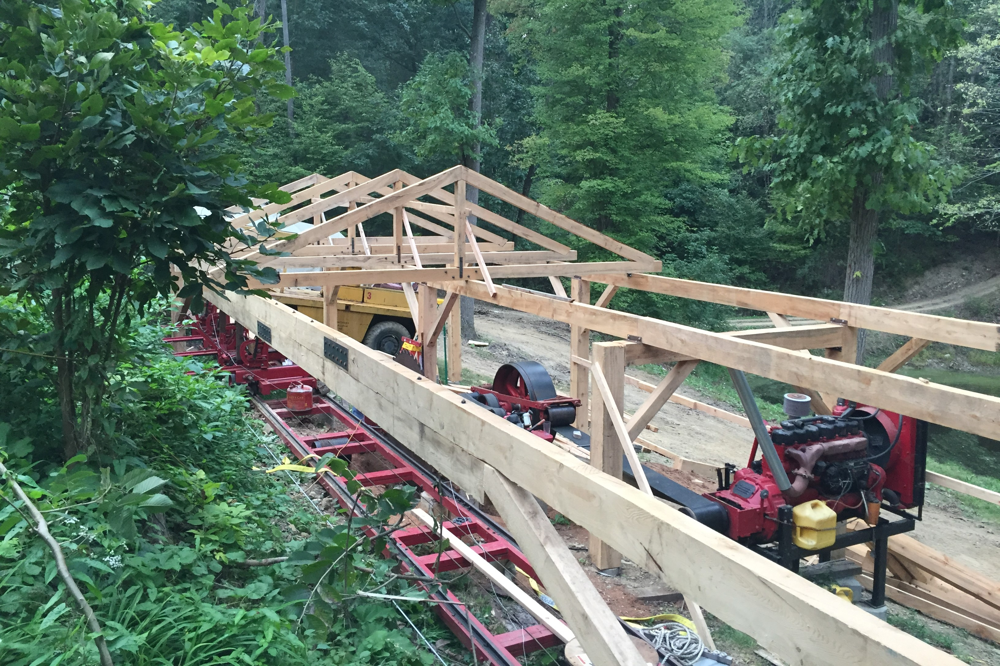

The finished sawmill building as seen from the other side of the valley.
Sawmill Shelter
Summer-Fall 2020
Putting a roof over the sawmill, to protect it from the elements
The finished sawmill building as seen from the other side of the valley.
The sawmill that I refurbished during my senior year of high school had been sitting outside fairly exposed to the elements since it was finished. We put a small portable car shelter over the husk, but it badly needed a real building over it. So I designed a large shelter to cover it. The shelter is only a roof, with no solid walls. It was designed in a post-and-timber style, being made from a relatively small number of very thick structural timbers, rather than many smaller pieces of dimensional lumber like most modern construction. This was convenient for us in that it allows us to put the roof up on relatively few columns, minimizing the number of augered concrete casons needed, and maximizing the spans between columns to make it easier for us to get long logs into the sawmill and get timbers out.

The composite beam being installed. The jack in the middle supported the beam while we installed the cross-braces and tensioned the steel cable at the bottom.
Because of unstable soil conditions along the south side of the sawmill, we can only have two columns, one at each end, along the south side of the sawmill building. This meant we needed a single wooden beam to span 52ft while supporting potentially heavy snow loads. This was accomplished by using a composite beam made from 5 seperate timbers, bolted together with steel lap plates and many threaded rods throught the stack to preload the beam together. Then cross-braces at each end braced the beam against its columns, while a steel cable tensioned at the bottom of the columns resisted the resulting outward thrust.

After all columns were installed, longways joists were installed, and then the trusses installed on top of those.
The trusses were built in our driveway and then brought down to the jobsite, and installed with our crane. The upper chords attached to the lower chords via large cutouts that transfer the forces very easily without depending on bolts or lag screws to transfer the forces. Temporary diagonal braces were installed to keep the trusses up and aligned during construction. Once we installed the perlins and the metal roofing, they stiffened the structure such that the internal diagonal braces could then be removed.